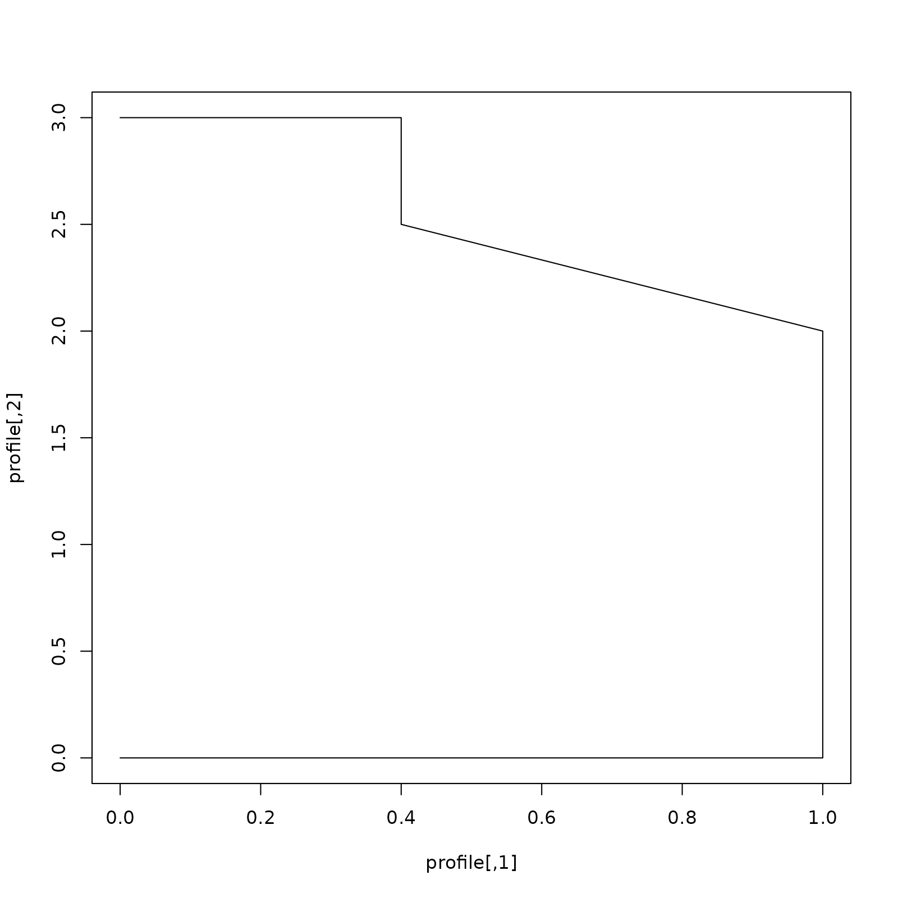
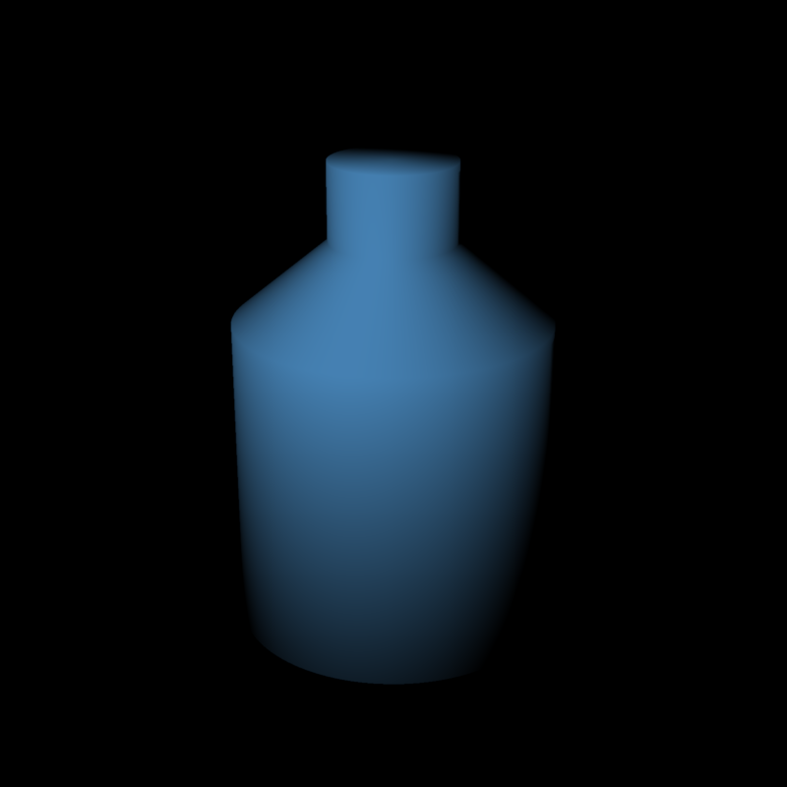
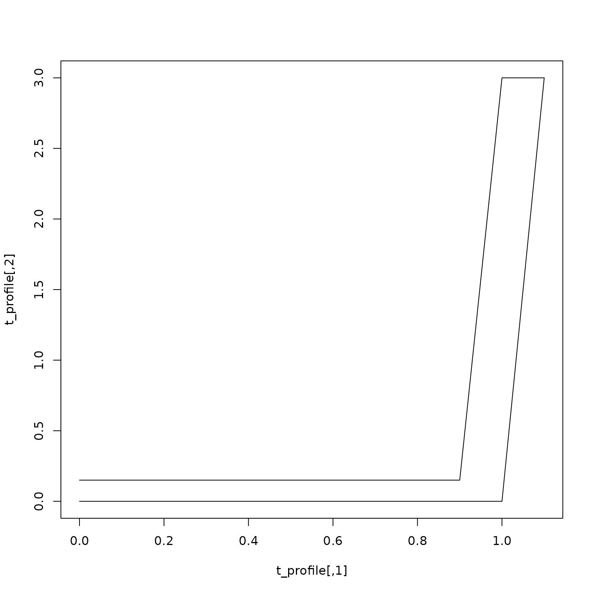
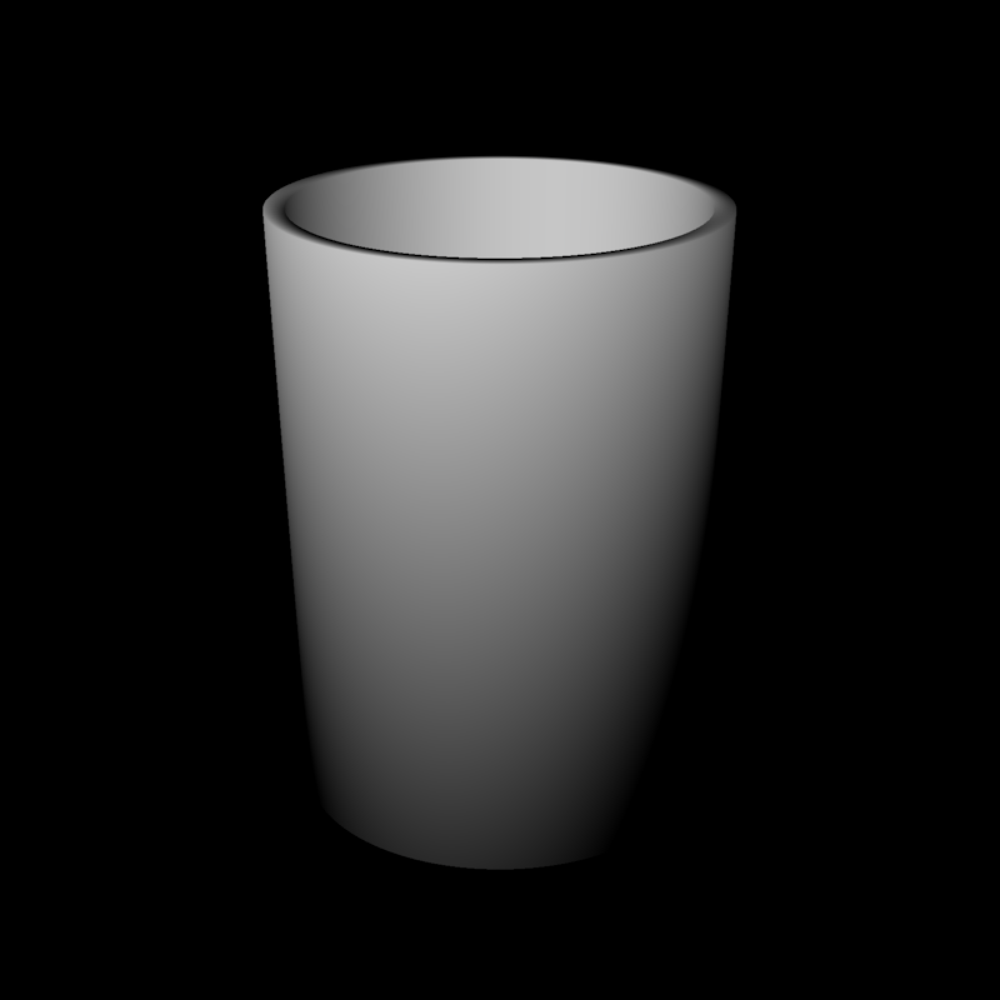

Revolve a radius/height profile around the Y axis to create a triangle mesh.
Numeric matrix or data frame with two columns: nonnegative radius and Y coordinate. Rows trace the surface in order. Use a bottom-to-top profile for outward-facing sides; for a hollow vessel, continue over the rim and down the inside. Reversing the profile reverses the surface orientation.
Default 128. Integer number of segments around the axis,
at least 3.
Default TRUE. Whether to include smooth vertex normals.
Set to FALSE for flat triangle shading.
Default c(0, 0, 0). Position of the mesh.
Default c(1, 1, 1). Scale of the mesh. A single number scales
all axes uniformly.
Default c(0, 0, 0). Rotation angles in degrees.
Default c(0, 0, 0). Point around which to rotate the mesh.
Default c(1, 2, 3). Order to rotate the axes.
Default material_list(). Material of the mesh.
A ray_mesh object, usable with rasterize_scene(),
add_shape(), and write_scene_to_obj().
Positive-radius endpoints leave open rings. To close an end, include a zero-radius endpoint in the profile. Each axis endpoint uses a single vertex, and the angular seam shares vertices, so a simple profile with both endpoints on the axis produces a watertight mesh without degenerate cap triangles. Axis points are only allowed at the endpoints. Consecutive duplicate points and immediate reversals are rejected; other self-intersections are not checked. The first and last profile rows are not automatically joined.
Smooth normals average adjacent unit profile tangents. Axis endpoint normals point along the axis. Texture coordinates use angle for U and normalized distance along the profile for V. Separate texture indices allow U to wrap from 1 to 0 without duplicating geometry at the seam.
# A closed bottle, specified as (radius, height) pairs.
profile = rbind(c(0, 0), c(1, 0), c(1, 2), c(0.4, 2.5),
c(0.4, 3), c(0, 3))
plot(profile, type="l")

bottle = lathe_mesh(profile, material = material_list(diffuse = "steelblue"))
rasterize_scene(bottle, lookfrom = c(5, 5, 7), lookat = c(0, 1.5, 0),
fov = 30, light_info = directional_light(c(1, 2, 3)))

# A hollow tumbler with a solid bottom and an open mouth.
t_profile = rbind(c(0, 0), c(1, 0), c(1.1, 3),
c(1, 3), c(0.9, 0.15), c(0, 0.15))
plot(t_profile, type="l")

tumbler = lathe_mesh(t_profile)
rasterize_scene(tumbler, lookfrom = c(5, 5, 7), lookat = c(0, 1.5, 0),
fov = 30, light_info = directional_light(c(1, 2, 3)),
shadow_map = FALSE)
